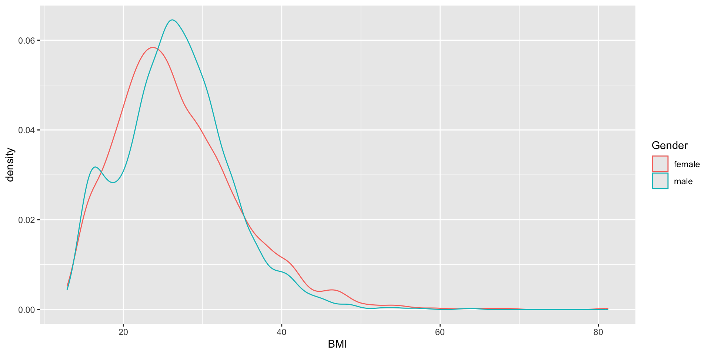
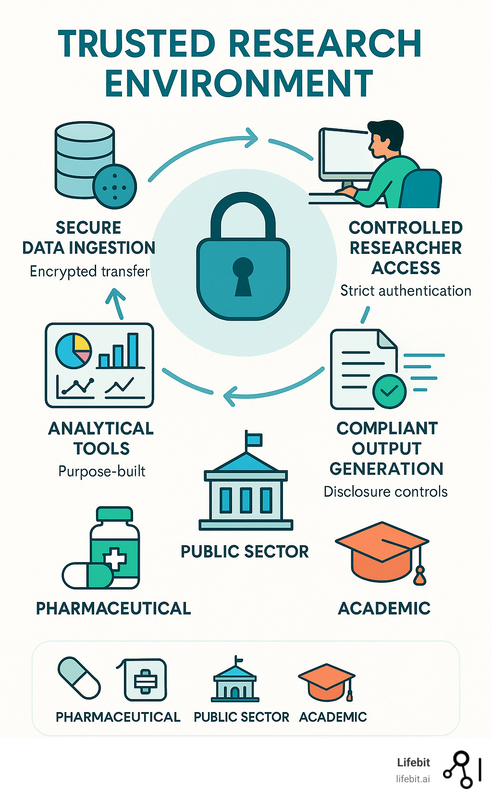

Classes 'tbl_df', 'tbl' and 'data.frame': 10000 obs. of 76 variables:
$ ID : int 51624 51624 51624 51625 51630 51638 51646 51647 51647 51647 ...
$ SurveyYr : Factor w/ 2 levels "2009_10","2011_12": 1 1 1 1 1 1 1 1 1 1 ...
$ Gender : Factor w/ 2 levels "female","male": 2 2 2 2 1 2 2 1 1 1 ...
$ Age : int 34 34 34 4 49 9 8 45 45 45 ...
$ AgeDecade : Factor w/ 8 levels " 0-9"," 10-19",..: 4 4 4 1 5 1 1 5 5 5 ...
$ AgeMonths : int 409 409 409 49 596 115 101 541 541 541 ...
$ Race1 : Factor w/ 5 levels "Black","Hispanic",..: 4 4 4 5 4 4 4 4 4 4 ...
$ Race3 : Factor w/ 6 levels "Asian","Black",..: NA NA NA NA NA NA NA NA NA NA ...
$ Education : Factor w/ 5 levels "8th Grade","9 - 11th Grade",..: 3 3 3 NA 4 NA NA 5 5 5 ...
$ MaritalStatus : Factor w/ 6 levels "Divorced","LivePartner",..: 3 3 3 NA 2 NA NA 3 3 3 ...
$ HHIncome : Factor w/ 12 levels " 0-4999"," 5000-9999",..: 6 6 6 5 7 11 9 11 11 11 ...
$ HHIncomeMid : int 30000 30000 30000 22500 40000 87500 60000 87500 87500 87500 ...
$ Poverty : num 1.36 1.36 1.36 1.07 1.91 1.84 2.33 5 5 5 ...
$ HomeRooms : int 6 6 6 9 5 6 7 6 6 6 ...
$ HomeOwn : Factor w/ 3 levels "Own","Rent","Other": 1 1 1 1 2 2 1 1 1 1 ...
$ Work : Factor w/ 3 levels "Looking","NotWorking",..: 2 2 2 NA 2 NA NA 3 3 3 ...
$ Weight : num 87.4 87.4 87.4 17 86.7 29.8 35.2 75.7 75.7 75.7 ...
$ Length : num NA NA NA NA NA NA NA NA NA NA ...
$ HeadCirc : num NA NA NA NA NA NA NA NA NA NA ...
$ Height : num 165 165 165 105 168 ...
$ BMI : num 32.2 32.2 32.2 15.3 30.6 ...
$ BMICatUnder20yrs: Factor w/ 4 levels "UnderWeight",..: NA NA NA NA NA NA NA NA NA NA ...
$ BMI_WHO : Factor w/ 4 levels "12.0_18.5","18.5_to_24.9",..: 4 4 4 1 4 1 2 3 3 3 ...
$ Pulse : int 70 70 70 NA 86 82 72 62 62 62 ...
$ BPSysAve : int 113 113 113 NA 112 86 107 118 118 118 ...
$ BPDiaAve : int 85 85 85 NA 75 47 37 64 64 64 ...
$ BPSys1 : int 114 114 114 NA 118 84 114 106 106 106 ...
$ BPDia1 : int 88 88 88 NA 82 50 46 62 62 62 ...
$ BPSys2 : int 114 114 114 NA 108 84 108 118 118 118 ...
$ BPDia2 : int 88 88 88 NA 74 50 36 68 68 68 ...
$ BPSys3 : int 112 112 112 NA 116 88 106 118 118 118 ...
$ BPDia3 : int 82 82 82 NA 76 44 38 60 60 60 ...
$ Testosterone : num NA NA NA NA NA NA NA NA NA NA ...
$ DirectChol : num 1.29 1.29 1.29 NA 1.16 1.34 1.55 2.12 2.12 2.12 ...
$ TotChol : num 3.49 3.49 3.49 NA 6.7 4.86 4.09 5.82 5.82 5.82 ...
$ UrineVol1 : int 352 352 352 NA 77 123 238 106 106 106 ...
$ UrineFlow1 : num NA NA NA NA 0.094 ...
$ UrineVol2 : int NA NA NA NA NA NA NA NA NA NA ...
$ UrineFlow2 : num NA NA NA NA NA NA NA NA NA NA ...
$ Diabetes : Factor w/ 2 levels "No","Yes": 1 1 1 1 1 1 1 1 1 1 ...
$ DiabetesAge : int NA NA NA NA NA NA NA NA NA NA ...
$ HealthGen : Factor w/ 5 levels "Excellent","Vgood",..: 3 3 3 NA 3 NA NA 2 2 2 ...
$ DaysPhysHlthBad : int 0 0 0 NA 0 NA NA 0 0 0 ...
$ DaysMentHlthBad : int 15 15 15 NA 10 NA NA 3 3 3 ...
$ LittleInterest : Factor w/ 3 levels "None","Several",..: 3 3 3 NA 2 NA NA 1 1 1 ...
$ Depressed : Factor w/ 3 levels "None","Several",..: 2 2 2 NA 2 NA NA 1 1 1 ...
$ nPregnancies : int NA NA NA NA 2 NA NA 1 1 1 ...
$ nBabies : int NA NA NA NA 2 NA NA NA NA NA ...
$ Age1stBaby : int NA NA NA NA 27 NA NA NA NA NA ...
$ SleepHrsNight : int 4 4 4 NA 8 NA NA 8 8 8 ...
$ SleepTrouble : Factor w/ 2 levels "No","Yes": 2 2 2 NA 2 NA NA 1 1 1 ...
$ PhysActive : Factor w/ 2 levels "No","Yes": 1 1 1 NA 1 NA NA 2 2 2 ...
$ PhysActiveDays : int NA NA NA NA NA NA NA 5 5 5 ...
$ TVHrsDay : Factor w/ 7 levels "0_hrs","0_to_1_hr",..: NA NA NA NA NA NA NA NA NA NA ...
$ CompHrsDay : Factor w/ 7 levels "0_hrs","0_to_1_hr",..: NA NA NA NA NA NA NA NA NA NA ...
$ TVHrsDayChild : int NA NA NA 4 NA 5 1 NA NA NA ...
$ CompHrsDayChild : int NA NA NA 1 NA 0 6 NA NA NA ...
$ Alcohol12PlusYr : Factor w/ 2 levels "No","Yes": 2 2 2 NA 2 NA NA 2 2 2 ...
$ AlcoholDay : int NA NA NA NA 2 NA NA 3 3 3 ...
$ AlcoholYear : int 0 0 0 NA 20 NA NA 52 52 52 ...
$ SmokeNow : Factor w/ 2 levels "No","Yes": 1 1 1 NA 2 NA NA NA NA NA ...
$ Smoke100 : Factor w/ 2 levels "No","Yes": 2 2 2 NA 2 NA NA 1 1 1 ...
$ Smoke100n : Factor w/ 2 levels "Non-Smoker","Smoker": 2 2 2 NA 2 NA NA 1 1 1 ...
$ SmokeAge : int 18 18 18 NA 38 NA NA NA NA NA ...
$ Marijuana : Factor w/ 2 levels "No","Yes": 2 2 2 NA 2 NA NA 2 2 2 ...
$ AgeFirstMarij : int 17 17 17 NA 18 NA NA 13 13 13 ...
$ RegularMarij : Factor w/ 2 levels "No","Yes": 1 1 1 NA 1 NA NA 1 1 1 ...
$ AgeRegMarij : int NA NA NA NA NA NA NA NA NA NA ...
$ HardDrugs : Factor w/ 2 levels "No","Yes": 2 2 2 NA 2 NA NA 1 1 1 ...
$ SexEver : Factor w/ 2 levels "No","Yes": 2 2 2 NA 2 NA NA 2 2 2 ...
$ SexAge : int 16 16 16 NA 12 NA NA 13 13 13 ...
$ SexNumPartnLife : int 8 8 8 NA 10 NA NA 20 20 20 ...
$ SexNumPartYear : int 1 1 1 NA 1 NA NA 0 0 0 ...
$ SameSex : Factor w/ 2 levels "No","Yes": 1 1 1 NA 2 NA NA 2 2 2 ...
$ SexOrientation : Factor w/ 3 levels "Bisexual","Heterosexual",..: 2 2 2 NA 2 NA NA 1 1 1 ...
$ PregnantNow : Factor w/ 3 levels "Yes","No","Unknown": NA NA NA NA NA NA NA NA NA NA ...EL5: Reproducibility
{targets} and safe environments
2026-03-06
Reading
- Baker (2016) and Oliveira Andrade (2025) motivates why reproducible analysis is important!
- Peng and Hicks (2021) introduce and elaborate more on the subject.
- Nguyen (2022) only read section “Basic Introduction to Docker and Containers” in chapter 2 (you do not need to install Docker for this course, just be aware of the concept)
- Kavianpour et al. (2022) introduces Trusted Research Environment as well as some perceived challenges with those (we will not use such environments in the course but this is likely the reality you need to cope with later on in your career, so you should get familiar with the concept).
Consider
After reading papers like Baker (2016) and Oliveira Andrade (2025) , one might be tempted to conclude that nothing is trustworthy — not even our own analyses. If every result comes with assumptions, uncertainty, and potential bias, what does trust really mean? Statisticians live in a world of probabilities, but most people prefer certainty.
Reproducibility might sound like a good thing but how much does the technical details matter if we are not allowed to freely share the underlying health care data anyway?
For reference:
You read briefly about Docker in the mandatory reading. If this seems interesting, you might read: An Introduction to Rocker: Docker Containers for R (not mandatory).
Practice
A workshop with 7 parts was given at the R Medicine conference 2025. Practice according to part 1-3 (part 4-7 are slightly outside the scope of the course and only recommended if you have additional time and interest).
Clone this GitHub repo. Exercies are found in the code folder.
Follow the recording from the workshop while you are practicing: The power of {targets} package for reproducible data science
Notes on the recording
- The full video is close to three hours long, but this includes breaks as well as the more advanced topics that are not mandatory (only the first 92 minutes, which includes several 10 min breaks is mandatory). Nevertheless, it is recommended to watch the full video (just watching part 4-7 for inspirational purposes without doing the exercises and without any expectation to fully grasp all the details).
- RStudio is used in the recording. Please try to use Positron; however, feel free to revert to RStudio this time if following the instructions in one application while working in another feels overwhelming.
- You may recognize some of the material from Part 3, as presented during the lecture
This practice is homework (no dedicated computer session is targeting targets but you should use at least some components of it in a later project, so you should practice the basics now)!
Motivational quotes
An article about computational science in a scientific publication is not the scholarship itself, it is merely advertising of the scholarship. The actual scholarship is the complete software development environment and the complete set of instructions which generated the figures. / Buckheit & Donoho
[It is important to have] a clear understanding of how data analysis was conducted when critical life and death decisions must be made. / Peng et al. 2021
Reproducible analysis
The definition of reproducible research generally consists of the following elements.
A published data analysis is reproducible if the analytic data sets and the computer code used to create the data analysis are made available to others for independent study and analysis
This is rather vague …
Why is this a problem?
Many, even simple, results depend on a precise record of procedures and processing and the order in which they occur.
Many statistical algorithms have many tuning parameters that can dramatically change the results if they are not inputted exactly the same way as was done by the original investigators.
If any of these myriad details are not properly recorded in the code, then there is a significant possibility that the results produced by others will differ from the original investigators’ results.


Recap folder structure
/.../my_project/
├── README.md - project documentation
├── TODO - what should be done next?
├── .git - handled by git (hidden folder)
├── .gitignore - used by git but your responsibility!
├── data/ - your data files (not under version control!)
├── cancer.csv
└── patients.qs
├── R/ - your saved R functions
├── function1.R
└── function2.R
├── reports/
└── _targets.R - targets pipeline scriptPipeline
A pipeline is a computational workflow that does statistics, analytics, or data science.
A pipeline contains tasks to prepare datasets, run models, and summarize results for a business deliverable or research paper.
Pipeline tools coordinate the pieces of computationally demanding analysis projects.
Pipe operator
The simplest example of pipelines might be when you combine R code by the pipe operator (|> or %>%), which in turn is inspired by the pipe operator in Unix (|).
Long running processes
- Imaigine you have nice R-scripts to take care of every step in your project
- You have either one very very … very … long file or a bunch of files which you execute in order
- It takes two weeks to run all scripts (not unrealistic for a big project!)
- You report the result to your collaborators
- They ask you to update a tiny detail somewhere in the middle of your workflow
- You need to rerun everything (while screaming in frustration)!
- This will repeat again and again until you finally
- Lose your mind and quit your job
- Adapt a more reproducible workflow
Steps-wise procedure
- The default setting in R is to save the workspace to disk when you end the session
- This is usually not recommended and therefore often disabled in for example RStudio
- (If you re-start your session at a later point you might have no idea how the restored objects relates to each other.)
- You may still want to execute things in a more step-wise fashion
- Convert big data files (
.sas7bdatfrom SAS etc) to something more R-friendly - Perform some data management (select relevant columns and rows), cleaning, add calculated variables etc
- Perform some exploratory data analysis (EDA) to get a better understanding of the data
- Perform some statistical analysis
- Report and visualize the results
- Convert big data files (
Caching
- If you perform each step in different script files, you might start each file with some input and end it with some output
- The output from the previous script is used as input in the next script
save()andload()are standard but can be very slow for large objectssaveRDS()andloadRDS()use serialization and are nowadays much more efficientqs2::qs_save()andqs2::qs_read()(orqs2::qd_save()andqs2::qd_read()) from the qs2 package are currently “state-of-the-art” (but things tend to change quickly)
Benchmarking
Single-threaded
| Algorithm | Compression | Save Time (s) | Read Time (s) |
|---|---|---|---|
| qs2 | 7.96 | 13.4 | 50.4 |
| qdata | 8.45 | 10.5 | 34.8 |
| base::serialize | 1.1 | 8.87 | 51.4 |
| saveRDS | 8.68 | 107 | 63.7 |
| fst | 2.59 | 5.09 | 46.3 |
| parquet | 8.29 | 20.3 | 38.4 |
| qs (legacy) | 7.97 | 9.13 | 48.1 |
Multi-threaded (8 threads)
| Algorithm | Compression | Save Time (s) | Read Time (s) |
|---|---|---|---|
| qs2 | 7.96 | 3.79 | 48.1 |
| qdata | 8.45 | 1.98 | 33.1 |
| fst | 2.59 | 5.05 | 46.6 |
| parquet | 8.29 | 20.2 | 37.0 |
| qs (legacy) | 7.97 | 3.21 | 52.0 |
qs2,qdataandqswithcompress_level = 3parquetvia thearrowpackage using zstdcompression_level = 3base::serializewithascii = FALSEandxdr = FALSE
Datasets used
1000 genomes non-coding VCF1000 genomes non-coding variants (2743 MB)B-cell dataB-cell mouse data, Greiff 2017 (1057 MB)IP locationIPV4 range data with location information (198 MB)Netflix movie ratingsNetflix ML prediction dataset (571 MB)
These datasets are openly licensed and represent a combination of numeric and text data across multiple domains. See inst/analysis/datasets.R on Github.
Who cares?
- Imagine you work with data for the whole Swedish population (> 10 M people)
- You have medical prescription data for everyone and lets say on average 20 prescriptions (since 2015) per person => 10 * 20 = 200 M rows of data
- You are working in a secure environment were data is stored on a network server (no SSD drive)
- The same environment is shared by 20 other researchers and you are all competing for the same bandwidth
- It will get increasingly frustrating just to load and save the big files
- You might need to wait for half an hour before you can start working 😩
Automated process
- Instead of relying on individual R scripts, use a reproducible pipeline.
- This is common practice in software development
- For example GNU Make is a build automation tool that automatically determines which parts of a program need to be rebuilt and executes the necessary commands based on rules defined in a Makefile.
- Iteration during project development (which is equally relevant for a health data project), will be much faster and reliable.
- Caching as described above is automated and you only need to read/write files to disk/network storage when actually needed.
Alternative solutions
- GNU Make with R
rmakecreates and maintains a build process for complex analytic tasks. The package allows easy generation of a Makefile for the (GNU) ‘make’ tool- drake was the first more established R-oriented alternative
- targets is the currently most developed and used alternative
- rixpress might be a rising star (at least if you are combining R and Python; polyglot)?
We will use targets in this course!
targets
The
{targets}package is a Make-like pipeline tool for statistics and data science in R.The package skips costly runtime for tasks that are already up to date, orchestrates the necessary computation with implicit parallel computing, and abstracts files as R objects.
If all the current output matches the current upstream code and data, then the whole pipeline is up to date, and the results are more trustworthy than otherwise.
The tasks themselves are called “targets”, and they run the functions and return R objects.
The
targetspackage orchestrates the targets and stores the output objects to make your pipeline efficient, painless (well … hopefully relatively so …), and reproducible.
Example
Data: survey data collected by the US National Center for Health Statistics (NCHS) which has conducted a series of health and nutrition surveys since the early 1960’s. Since 1999 approximately 5,000 individuals of all ages are interviewed in their homes every year and complete the health examination component of the survey.
Question: Is there any association between Gender and BMI?
R script
A normal R script might look like:
You must run the script in order (but might not always do that during the initial “trial and error” process … if so, confusion will later arise)!
objects
df,tblandtstonly lives in the active sessionNo problem in this example
but working with big and complex data might introduce long-running processes => time consuming!
Results
Welch Two Sample t-test
data: BMI by Gender
t = 1.4981, df = 9452.6, p-value = 0.1341
alternative hypothesis: true difference in means between group female and group male is not equal to 0
95 percent confidence interval:
-0.06939849 0.51940903
sample estimates:
mean in group female mean in group male
26.77208 26.54707 
Figure and R output
You should see a figure and some R output on this slide. I just notice it doesn’t show on my phone when viewing the slides, so if you don’t see it, you might try another browser etc (it seems to render correct in the handouts however).
Pipeline
- Define steps in your analysis as targets
- Define dependencies between targets
- Automatically track changes and rerun only necessary parts
Why?
- You do not want to rerun everything all the time!
- You want to keep track of what you have done
- You want to be able to reproduce your results later
- You want to share your workflow with others
target
Reformulate from ordinary object assignment:
to a target
<tar_stem>
name: df
description:
command:
as_tibble(NHANES::NHANES)
format: rds
repository: local
iteration method: vector
error mode: stop
memory mode: auto
storage mode: worker
retrieval mode: auto
deployment mode: worker
priority: 0
resources:
list()
cue:
seed: TRUE
file: TRUE
iteration: TRUE
repository: TRUE
format: TRUE
depend: TRUE
command: TRUE
mode: thorough
packages:
targets
lubridate
forcats
stringr
dplyr
purrr
readr
tidyr
tibble
ggplot2
tidyverse
stats
graphics
grDevices
utils
datasets
methods
base
library:
NULLPut all targets in a list
_targets.R file
Put that list into a file _targets.R together with some additional code:
library(targets)
tar_source() # Source all scripts with functions stored in R folder
tar_option_set(
# Specify all needed packages here
# NOTE! They will not be available in the interactive R-session
# so you might load them above as well to avoid confusion
packages = c("tidyverse"),
# Format used for caching (qs which is actually qs2 is best for big data)
format = "qs",
# Additional settings ...
seed = 123
)
list(
tar_target(df, as_tibble(NHANES::NHANES)),
tar_target(tbl, count(df, Species)),
tar_target(tst, t.test(BMI ~ Gender, df)),
tar_target(gg, {
ggplot(df, aes(BMI, color = Gender)) + geom_density()
})
)Benefits
- execute the whole project by
tar_make() - intermediate steps are cached and cached objects retrieved by
tar_load()ortar_read() - dependency among individual steps can be visualized:
tar_visnetwork()
Dependency graph

Live show
Or perform those steps from within Positron.
R-versions
- Imagine you finish your research project and you submit a manuscript to a journal
- The journal comes back one year later (they didn’t have time until know) and one reviewer ask you to double check some steps of the analysis
- You make some modifications and rerun your pipelines.
- But it doesn’t work!
- Half a year ago you updated your R installation and a week ago all of your installed packages.
- One package was retired from CRAN (could happen even though there was nothing wrong with the package when you used it … maybe the maintainer just didn’t have time or energy to keep maintaining it)
- One package has deprecated one of the functions you previously used
- On package has redesigned the output format from a specific function you used
- 😱

Pros and cons
It is always a good idea to be able to reproduce exactly what you did!
But if you never update you might miss essential bug fixes!
If your results change, how can you know which version was the most accurate?
Best practice (I guess) is to rerun the analysis both with the frozen versions and with the most up-to-date versions of the packages … because you have all the time in the world and nothing more important to do … right … 😂
Different operating systems
R should behave similar on different operating systems.
Exceptions nevertheless exist!
parallel::mclapply()behaves differently on Windows compared to Unix-like systems because Windows does not support forked processes.sort(c("ä", "a", "z"))might differ due to locale settingsEarlier versions of R relied on system-specific native encoding (notably on Windows), whereas modern versions (R ≥ 4.2) use UTF-8 as the default across platforms.

Combining all?
you could very well use both targets + renv + git + GitHub etc
At some point you might start to wonder whether you are a medical statistician or a software developer … and the more complex/esoteric tools you use, the more difficult it might be to collaborate with others
Try to find some middle ground … but always be open to new ideas!

TRE
Historically: centralized data on mainframe computer
More recently: working with data locally (desktop/laptop)
Nowadays: (Different names, same concept) Secure Research Envoronemnt (SRE), Trusted Research Envoronment (TRE), Secure Data Environment (SDE), Data Clean Room, Data Safe Havens, …
In practice
Connect through VPN
2-factor authentication (BankID common in Sweden)
Often by Remote Desktop (to access a Windows virtual desktop)
Sometimes a containerized Linux setup for R/RStudio etc accessed through a web browser (from within the virtual Windows machine)
Limited internet access from within the environment (maybe possible to install CRAN-packages tied to a certain historical snapshot but not the latest released/developed versions).
Data import and exports goes through administrator
Pros: Secure, centralized backups, possibility to scale/share large computing resources (CPU, RAM, GPU etc), less dependent on individual computer (laptop), might aid collaboration
Cons: needs internet connection, restrictions on what software (packages) to use, difficult to export results and/or import script files etc, mentally exhausting to use for example a Mac Keyboard when working in Windows, can be expensive (pay per clock-cycle of CPU usage etc instead of simply purchasing a computer once).


Baker, Monya. 2016. “1,500 Scientists Lift the Lid on Reproducibility.” Nature 533 (7604): 452–54. https://doi.org/10.1038/533452a.
Kavianpour, Sanaz, James Sutherland, Esma Mansouri-Benssassi, Natalie Coull, and Emily Jefferson. 2022. “Next-Generation Capabilities in Trusted Research Environments: Interview Study.” Journal of Medical Internet Research 24 (9): e33720. https://doi.org/10.2196/33720.
Nguyen, Andrew. 2022. Hands-on healthcare data: taming the complexity of real-world data. First edition. Beijing Boston Farnham Sebastopol Tokyo: O’Reilly.
Oliveira Andrade, Rodrigo de. 2025. “Huge Reproducibility Project Fails to Validate Dozens of Biomedical Studies.” Nature 641 (8062): 293–94. https://doi.org/10.1038/d41586-025-01266-x.
Peng, Roger D., and Stephanie C. Hicks. 2021. “Reproducible Research: A Retrospective.” Annual Review of Public Health 42 (Volume 42, 2021): 79–93. https://doi.org/10.1146/annurev-publhealth-012420-105110.